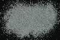

|
DOCUMENTATION_FORMAT: MINERAL
SAMPLE_ID: HS8.1B, HS8.2B, HS8.3B, HS8.4B, HS8.6
MINERAL_TYPE: Phyllosilicate
MINERAL: Serpentine
FORMULA: Mg3Si2O5(OH)4
FORMULA_HTML: Mg3Si2O5(OH)4
COLLECTION_LOCALITY: Cardiff, Missouri
ORIGINAL_DONOR: Hunt and Salisbury Collection
CURRENT_SAMPLE_LOCATION: USGS Denver Spectroscopy Laboratory
ULTIMATE_SAMPLE_LOCATION: USGS Denver Spectroscopy Laboratory
SAMPLE_DESCRIPTION:
"S-19. Serpentine. Cardiff, Mo. (8). Serpentine is a hydrous secondary mineral, typically an alteration product of olivine, pyroxene, or amphibole. Its composition is Mg3Si2O5(OH)4, but ferrous iron and nickel may be present in small amount. Weak ferric and ferrous ion bands are displayed by this sample near 0.7 and 1.0µ respectively, which may be original, or due to the presence of a small amount of unaltered amphibole. The bands near 1.4µ and at wavelengths longer than 1.9µ are hydroxyl bands. As in the case of some amphiboles and pyroxenes, this sample displays a peak near 0.5µ in the visible due to the combined effect of the ferric ion band in the near-infrared and the fall-off in the blue."
Hunt, G.R., J.W. Salisbury, 1970, Visible and near-infrared spectra of minerals and rocks: I. Silicate minerals. Modern Geology, v. 1, p. 283-300.
Grain size fractions are indicated by the extension after the sample number:
.1B = <5 µm
.2B = <74 µm
.3B = 74-250 µm
.4B = 250-1200 µm
.6 = cut slab
IMAGE_OF_SAMPLE:

END_SAMPLE_DESCRIPTION.
XRD_ANALYSIS:
Serpentine is a subgroup classification from the Kaolinite-Serpentine Group. Best fit is for antigorite with a minor amount of magnesite. Should check chemistry to confirm antigorite and magnesite. B. Benzel.
END_XRD_ANALYSIS.
COMPOSITIONAL_ANALYSIS_TYPE: None # XRF, EPMA, ICP(Trace), WChem
COMPOSITION_TRACE:
COMPOSITION_DISCUSSION:
END_COMPOSITION_DISCUSSION.
MICROSCOPIC_EXAMINATION:
END_MICROSCOPIC_EXAMINATION.
SPECTROSCOPIC_DISCUSSION: Spectrum is typical for serpentine from the ultra violet to the NIR. A weak absorption near 2500 cm-1 may be evidence for magnesite. G. Swayze.
END_SPECTROSCOPIC_DISCUSSION.
SPECTRAL_PURITY: 1c2_3_4_ # HS8.1B # 1= 0.2-3, 2= 1.5-6, 3= 6-25, 4= 20-150 microns
SPECTRAL_PURITY: 1c2_3_4_ # HS8.2B # 1= 0.2-3, 2= 1.5-6, 3= 6-25, 4= 20-150 microns
SPECTRAL_PURITY: 1c2c3b4c # HS8.3B # 1= 0.2-3, 2= 1.5-6, 3= 6-25, 4= 20-150 microns
SPECTRAL_PURITY: 1c2_3_4_ # HS8.4B # 1= 0.2-3, 2= 1.5-6, 3= 6-25, 4= 20-150 microns
SPECTRAL_PURITY: 1c2_3_4_ # HS8.6 # 1= 0.2-3, 2= 1.5-6, 3= 6-25, 4= 20-150 microns
{kind=link}